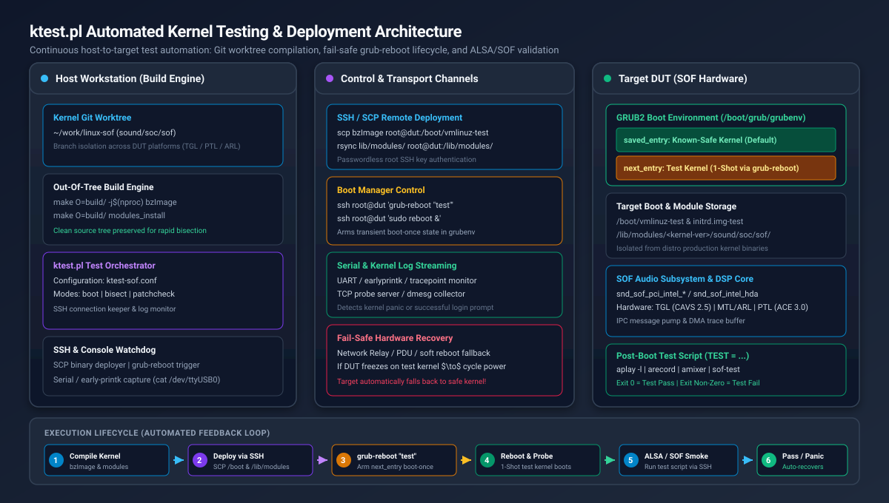
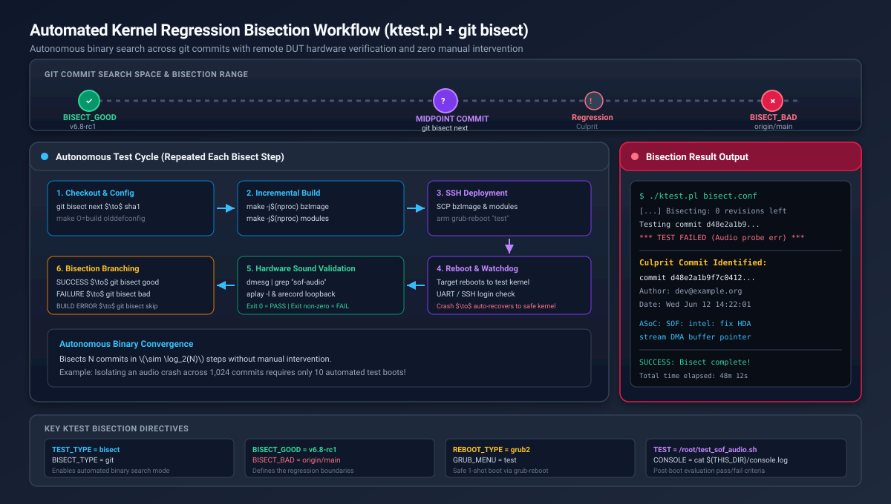

Automated Kernel Testing and Bisection with ktest#
Overview and Motivation#
Developing Linux kernel drivers for Sound Open Firmware (SOF)—including the
core ALSA SoC infrastructure (sound/soc/sof/), platform glue layers, DSP IPC
message pumps, and hardware DAI interfaces—requires frequent testing on real
silicon target hardware (Devices Under Test, or DUTs).
Iterating manually on target hardware (compiling locally, copying modules over the network, updating bootloaders, manually rebooting, and testing audio streams) is slow, repetitive, and dangerous: a kernel panic or driver deadlock can leave the target in an unbootable state requiring physical power button or reflash recovery.
The upstream Linux kernel provides a powerful, native test automation framework
called ktest (located at tools/testing/ktest/ktest.pl in the kernel
source tree). Combined with Git worktrees, fail-safe bootloader management, and
automated test scripts, ktest.pl delivers an end-to-end continuous validation
environment for SOF developers.
Key Capabilities for SOF Development#
Automated Build and Deployment: Automatically compiles the kernel image (
bzImage) and kernel modules, transfers binaries to the remote DUT over SSH or NFS, updates the target’s initramfs, and triggers a clean system reboot.Fail-Safe “Boot-Once” Protection: Leverages GRUB2
grub-rebootor Boot Loader Specification (BLS) one-shot booting. The DUT attempts to boot the new test kernel exactly once. If the test kernel crashes, hangs, or panics, the hardware watchdog or a subsequent power cycle automatically boots the system back into a verified, stable reference kernel.Autonomous Regression Bisection (`git bisect`): Identifies the exact git commit that introduced a kernel panic, driver probe regression, or audio stream underflow across hundreds of commits overnight with zero manual intervention.
Multi-DUT and Multi-Branch Worktrees: By combining
ktest.plwith Git worktrees, developers can drive multiple hardware platforms (e.g. Tiger Lake, Panther Lake, Arrow Lake, or generic development laptops) concurrently from a single host workstation without repository conflicts.
System Architecture#
The ktest.pl automated testing architecture decouples the host workstation
(which handles computationally intensive compilation and git orchestration) from
the target DUT (which executes the compiled kernel and exercises audio DSP
hardware).
{kind=link}

Figure 314 ktest.pl Automated Testing and Deployment Architecture#
Architecture Components#
Host Workstation (Build Engine):
Kernel Source & Git Worktrees: Maintains clean kernel working trees (e.g.
~/work/linux-sof) and dedicated out-of-tree build directories (make O=build/).ktest Orchestrator (``ktest.pl``): Reads target-specific configuration files (
sof-ktest.conf), manages the testing lifecycle, monitors consoles, and coordinates git bisection steps.Console & Network Watchdog: Streams serial UART logs or SSH session transcripts to monitor early kernel boot, driver probe logs, and panic dumps.
Transport & Control Link:
SSH / SCP: Transfers compiled kernel images, module archives, and initiates bootloader commands without interactive passwords.
Serial Console / UART: Connects to the target serial port (e.g. via
/dev/ttyUSB0) to capture early printk and DSP traceDMA outputs even if the network stack fails to initialize.Hardware Power Cycle / Relays: Network-controlled relays or smart PDUs allow
ktest.plto hard-cycle target power automatically when a kernel hangs completely.
Target Device Under Test (DUT):
GRUB2 Boot Environment: Maintains a dual-kernel environment in
/boot/grub/grubenvconsisting of a permanent, known-safe reference kernel (saved_entry) and a transient test kernel (next_entry).Isolated Kernel Binaries: Test kernels reside in
/boot/vmlinuz-testand/boot/initrd.img-test, preventing corruption of the system’s production distribution kernel.Audio DSP Hardware: Exercises Intel CAVS / ACE audio DSP hardware, SoundWire links, and HDA/I2S codecs through the SOF Linux driver stack.
Automated Audio Test Script: A target-side test harness executed via SSH that verifies driver initialization, ALSA sound card enumeration, and PCM audio playback/capture.
Target Device Setup#
Follow these steps to configure a target hardware platform (e.g. an Ubuntu, Debian, or Fedora development machine or DUT) for automated testing over SSH.
Step 1: Configure Passwordless SSH Access#
ktest.pl requires root SSH access to deploy kernel images, install modules,
and execute bootloader commands. For security, configure key-based
authentication and disable interactive password logins for root.
On your host development machine, generate a dedicated SSH keypair for ktest:
ssh-keygen -t ed25519 -f ~/.ssh/id_ktest -C "ktest-automation"
Copy the public key to the target DUT:
ssh-copy-id -i ~/.ssh/id_ktest.pub root@<target-ip>
Test the passwordless connection from your host:
ssh -i ~/.ssh/id_ktest root@<target-ip> "uname -a"
Configure your host’s
~/.ssh/configto simplify invocation and set mandatory connection timeouts:Host ktest-dut HostName <target-ip> User root IdentityFile ~/.ssh/id_ktest ConnectTimeout 5 ServerAliveInterval 15 ServerAliveCountMax 3 StrictHostKeyChecking accept-newOn the target DUT, configure the SSH daemon to enforce key-only authentication by setting
PermitRootLogin prohibit-passwordin/etc/ssh/sshd_config:sudo sed -i 's/^#\?PermitRootLogin .*/PermitRootLogin prohibit-password/' /etc/ssh/sshd_config sudo systemctl restart ssh || sudo systemctl restart sshd
Step 2: Establish the Dual-Kernel Framework#
To guarantee that a broken test kernel never bricks the target DUT, create a permanent copy of your current, known-working kernel as the “safe” kernel, and create a separate “test” placeholder kernel.
On the target DUT (Ubuntu / Debian):
# Verify the running known-good kernel
CURRENT_KERN=$(uname -r)
echo "Current safe kernel: ${CURRENT_KERN}"
# Create the permanent test kernel placeholders
sudo cp /boot/vmlinuz-${CURRENT_KERN} /boot/vmlinuz-test
sudo cp /boot/initrd.img-${CURRENT_KERN} /boot/initrd.img-test
On Fedora / RHEL / BLS systems:
CURRENT_KERN=$(uname -r)
sudo cp /boot/vmlinuz-${CURRENT_KERN} /boot/vmlinuz-test
sudo cp /boot/initramfs-${CURRENT_KERN}.img /boot/initramfs-test.img
sudo grubby --add-kernel /boot/vmlinuz-test --initrd=/boot/initramfs-test.img --title="test"
Step 3: Configure GRUB2 for One-Shot Booting#
By default, GRUB boots whichever kernel is marked as default. For automated testing, GRUB must be configured with:
GRUB_DEFAULT=saved: Boot the kernel stored in/boot/grub/grubenv.GRUB_SAVEDEFAULT=false: Do not permanently change the default entry when a kernel boots.GRUB_DISABLE_SUBMENU=y: Flatten all menu entries into a single list so entry indexes remain stable and predictable.
On Ubuntu / Debian:
Create a dedicated configuration snippet in
/etc/default/grub.d/ktest.cfg:sudo tee /etc/default/grub.d/ktest.cfg << 'EOF' GRUB_DEFAULT=saved GRUB_SAVEDEFAULT=false GRUB_DISABLE_SUBMENU=y EOF
Re-generate the GRUB configuration:
sudo update-grubIdentify the menu index of your known-safe baseline kernel:
awk -F"'" '/menuentry / {print i++, $2}' /boot/grub/grub.cfg
Example output:
0 Ubuntu, with Linux 6.8.0-40-generic 1 Ubuntu, with Linux test 2 Ubuntu, with Linux 6.5.0-28-generic
Set your stable distribution kernel as the permanent default (for example, index
0):sudo grub-set-default 0
Verify the GRUB environment file:
grub-editenv listThe output should show:
saved_entry=0
Understanding the Fail-Safe One-Shot Lifecycle#
The one-shot boot mechanism works through grub-reboot:
When
ktest.plfinishes deploying a new test kernel, it executesgrub-reboot "test"(or passes the numerical menu entry index oftest).grub-rebootwritesnext_entry=testinto/boot/grub/grubenv.On reboot, GRUB reads
grubenv, seesnext_entry=test, deletes thenext_entrysetting from the environment, and boots the test kernel.If the test kernel boots successfully,
ktest.plexecutes the audio test suite.If the test kernel crashes, deadlocks, or panics, the host power cycle reboots the target. Because
next_entrywas already cleared, GRUB falls back tosaved_entry(the known-safe kernel). The system recovers automatically without manual intervention!
You can test this behavior manually on the target:
# Arm one-shot boot into the test kernel
sudo grub-reboot "Ubuntu, with Linux test"
# Inspect grubenv: next_entry is now primed
grub-editenv list
# Output:
# saved_entry=0
# next_entry=Ubuntu, with Linux test
# Reboot into the test kernel
sudo reboot
# After boot, verify uname -r reports 'test', and grubenv has cleared next_entry:
uname -r
grub-editenv list
# Output:
# saved_entry=0
Host Environment and Git Worktrees#
To keep your main development repository clean and avoid build collisions when testing multiple platforms or running bisection, use Git worktrees.
Step 1: Create an Isolated Worktree#
From your main Linux kernel repository, create a dedicated worktree and build directory:
cd ~/work/linux
git fetch origin
# Create a dedicated branch and worktree for ktest
git worktree add -b ktest-sof-tgl ~/work/linux-ktest-tgl origin/main
# Create a dedicated directory for ktest operational files
mkdir -p ~/work/sof-ktest-run
cd ~/work/sof-ktest-run
# Copy the upstream ktest.pl script from the kernel tree
cp ~/work/linux-ktest-tgl/tools/testing/ktest/ktest.pl .
chmod +x ktest.pl
Step 2: Prepare the Baseline Kernel Configuration#
ktest.pl requires an out-of-tree build directory to keep the source tree
pristine. Prepare a baseline .config containing all required SOF options:
# Create out-of-tree build directory
mkdir -p ~/work/sof-ktest-run/build-tgl
cd ~/work/linux-ktest-tgl
# Generate base configuration
make O=~/work/sof-ktest-run/build-tgl defconfig
# Merge required SOF kernel options
./scripts/config --file ~/work/sof-ktest-run/build-tgl/.config \
--enable CONFIG_SOUND \
--enable CONFIG_SND \
--enable CONFIG_SND_SOC \
--enable CONFIG_SND_SOC_SOF_TOPLEVEL \
--enable CONFIG_SND_SOC_SOF_PCI \
--enable CONFIG_SND_SOC_SOF_INTEL_TOPLEVEL \
--enable CONFIG_SND_SOC_SOF_INTEL_HDA_COMMON \
--enable CONFIG_SND_SOC_SOF_HDA \
--enable CONFIG_SND_SOC_SOF_PROBES \
--enable CONFIG_SND_SOC_SOF_DEVELOPER_SUPPORT \
--enable CONFIG_SND_SOC_SOF_DEBUG_PROBES
make O=~/work/sof-ktest-run/build-tgl olddefconfig
# Save this configuration as the reference baseline
cp ~/work/sof-ktest-run/build-tgl/.config ~/work/sof-ktest-run/sof-dev-defconfig
Production ktest Configuration#
Save the following configuration as ~/work/sof-ktest-run/sof-ktest.conf.
This file contains the complete, production-grade configuration for building,
deploying, and validating SOF kernels on a GRUB2 target DUT.
# ==============================================================================
# ktest.pl Production Configuration for Sound Open Firmware (SOF)
# ==============================================================================
# ------------------------------------------------------------------------------
# 1. Target Machine and Network Credentials
# ------------------------------------------------------------------------------
MACHINE = ktest-dut
SSH_USER = root
CLEAR_LOG = 1
# ------------------------------------------------------------------------------
# 2. Host Build and Path Variables
# ------------------------------------------------------------------------------
THIS_DIR := ${PWD}
BUILD_DIR = ${HOME}/work/linux-ktest
OUTPUT_DIR = ${THIS_DIR}/build-tgl
LOG_FILE = ${OUTPUT_DIR}/ktest-execution.log
# Build targets and compiler options
BUILD_TARGET = arch/x86/boot/bzImage
BUILD_OPTIONS = -j16
# ------------------------------------------------------------------------------
# 3. Kernel Versioning and Target Image Path
# ------------------------------------------------------------------------------
# Use a constant 'test' localversion suffix to map directly to /boot/vmlinuz-test
LOCALVERSION = test
TARGET_IMAGE = /boot/vmlinuz-${LOCALVERSION}
# ------------------------------------------------------------------------------
# 4. Bootloader Configuration (GRUB2 Boot-Once)
# ------------------------------------------------------------------------------
REBOOT_TYPE = grub2
GRUB_FILE = /boot/grub/grub.cfg
GRUB_MENU = Ubuntu, with Linux test
GRUB_REBOOT = grub-reboot
# ------------------------------------------------------------------------------
# 5. Remote Reboot and Power Cycle Hooks
# ------------------------------------------------------------------------------
# Wrap reboot commands with timeout to prevent hanging the host script
REBOOT = timeout 15 ssh -o ConnectTimeout=5 $SSH_USER@$MACHINE 'sudo reboot > /dev/null 2>&1 &'
# Power-cycle fallback if DUT freezes or panics (e.g. via lab network relay)
POWER_CYCLE = echo "r2 toggle" | nc 127.0.0.1 8081; sleep 10
# Serial console capture (optional: stream serial UART logs into a FIFO)
CONSOLE = cat ${THIS_DIR}/console.fifo
# ------------------------------------------------------------------------------
# 6. Post-Install Hook: Initramfs Generation & Module Deployment
# ------------------------------------------------------------------------------
# ktest automatically runs 'make modules_install' to a temporary staging path,
# transfers modules to /lib/modules/$KERNEL_VERSION on the DUT, and then calls POST_INSTALL.
# Re-generate the test initramfs with the newly installed modules:
POST_INSTALL = ssh $SSH_USER@$MACHINE "mkinitramfs -o /boot/initrd.img-${LOCALVERSION} ${KERNEL_VERSION}"
# ------------------------------------------------------------------------------
# 7. Test Definition and Validation Suite
# ------------------------------------------------------------------------------
TEST_START
TEST_TYPE = test
BUILD_TYPE = useconfig:${THIS_DIR}/sof-dev-defconfig
BUILD_NOCLEAN = 1
# Execute the automated SOF audio test script on the target
TEST = timeout 60 ssh -o ConnectTimeout=5 $SSH_USER@$MACHINE '/root/test_sof_audio.sh'
Configuration Directives Reference#
The table below explains the key directives used in sof-ktest.conf:
Directive |
Type |
Description |
|---|---|---|
|
Hostname/IP |
Network address or |
|
Directory path |
Root directory of the kernel Git source tree (worktree). |
|
Directory path |
Out-of-tree compilation output directory ( |
|
String |
Suffix appended to the kernel release version. Using |
|
File path |
Absolute destination path on the target for the compiled kernel image. |
|
Identifier |
Bootloader control method. Set to |
|
String / Index |
Exact title or zero-based index of the test kernel entry in |
|
Command |
Command executed on the target after module transfer (typically generates the test initramfs). |
|
Command |
Validation command or script executed after the target reboots. Exit
code |
Automated Audio Verification Test Script#
For ktest.pl to determine whether a kernel passed or failed, you must
provide a test script that validates the audio subsystem and returns 0 on
success or non-zero on failure.
Deploy the following script to /root/test_sof_audio.sh on your target DUT
(and make it executable with chmod +x /root/test_sof_audio.sh):
#!/usr/bin/env bash
# ==============================================================================
# SOF Kernel Automated Audio Smoke Test for ktest.pl
# Returns 0 on PASS, 1 on FAIL
# ==============================================================================
set -euo pipefail
echo "=== [1/5] Checking Kernel and System Status ==="
uname -a
uptime
echo "=== [2/5] Verifying SOF DSP Firmware Initialization ==="
# Search dmesg for successful firmware boot signature
if ! dmesg | grep -iE "SOF: (firmware boot complete|FW loaded successfully)"; then
echo "ERROR: SOF DSP firmware failed to boot or register!"
dmesg | tail -n 50
exit 1
fi
echo "SUCCESS: SOF firmware boot verified."
echo "=== [3/5] Verifying ALSA Sound Card Enumeration ==="
cat /proc/asound/cards
if ! grep -qi "sof" /proc/asound/cards; then
echo "ERROR: No SOF sound card registered in /proc/asound/cards!"
aplay -l || true
exit 1
fi
echo "SUCCESS: SOF sound card detected."
echo "=== [4/5] Inspecting ALSA PCM Streams and Controls ==="
aplay -l
# Ensure at least one playback PCM device exists
if ! aplay -l | grep -q "^card"; then
echo "ERROR: No playback PCM devices detected!"
exit 1
fi
echo "=== [5/5] Performing Audio Playback & Record Smoke Test ==="
# Find the primary SOF card number
CARD_NUM=$(cat /proc/asound/cards | awk '/\[sof/ {print $1; exit}')
if [ -z "${CARD_NUM}" ]; then
# Fallback to card 0
CARD_NUM=0
fi
echo "Using sound card index: ${CARD_NUM}"
# Unmute channels and set volume to 75%
amixer -c "${CARD_NUM}" set "Speaker" 75% unmute 2>/dev/null || amixer -c "${CARD_NUM}" set "Playback" 75% unmute 2>/dev/null || true
# Generate a 2-second 48kHz stereo test tone and play to card
TEST_WAV="/tmp/ktest_smoke.wav"
RECORD_WAV="/tmp/ktest_record.wav"
rm -f "${TEST_WAV}" "${RECORD_WAV}"
# Generate sine wave using sox or python if available, else play short silence
python3 -c "
import wave, struct, math
f = wave.open('${TEST_WAV}', 'wb')
f.setnchannels(2); f.setsampwidth(2); f.setframerate(48000)
for i in range(96000):
sample = int(32767.0 * 0.5 * math.sin(2.0 * math.pi * 440.0 * i / 48000.0))
f.writeframes(struct.pack('<hh', sample, sample))
f.close()
"
echo "Executing audio playback test..."
if ! aplay -D "plughw:${CARD_NUM},0" -d 2 "${TEST_WAV}"; then
echo "ERROR: Playback smoke test failed!"
dmesg | tail -n 40
exit 1
fi
echo "=== Checking dmesg for Driver Panics or Oops ==="
if dmesg | grep -iE "(kernel NULL pointer|kernel BUG|panic - not syncing|dsp error)"; then
echo "ERROR: Kernel panic or DSP error detected in dmesg!"
exit 1
fi
echo "=== ALL AUDIO SMOKE TESTS PASSED SUCCESSFULLY ==="
exit 0
Automated Kernel Regression Bisection#
One of the most valuable capabilities of ktest.pl is its ability to perform
automated regression bisection (TEST_TYPE = bisect with BISECT_TYPE = git).
When a bug is detected (e.g. audio stops working between kernel v6.8 and
v6.9), ktest.pl performs a binary search through git commits, builds
each candidate kernel, boots the target, runs the audio test suite, and marks
the commit as good or bad automatically.
{kind=link}

Figure 315 Automated Kernel Regression Bisection Workflow#
Bisection Configuration Template#
Create a dedicated bisection configuration file ~/work/sof-ktest-run/sof-bisect.conf:
# ==============================================================================
# ktest.pl Git Bisection Configuration for SOF Audio Regressions
# ==============================================================================
MACHINE = ktest-dut
SSH_USER = root
CLEAR_LOG = 1
THIS_DIR := ${PWD}
BUILD_DIR = ${HOME}/work/linux-ktest
OUTPUT_DIR = ${THIS_DIR}/build-tgl
LOG_FILE = ${OUTPUT_DIR}/ktest-bisect.log
BUILD_TARGET = arch/x86/boot/bzImage
BUILD_OPTIONS = -j16
LOCALVERSION = test
TARGET_IMAGE = /boot/vmlinuz-${LOCALVERSION}
REBOOT_TYPE = grub2
GRUB_FILE = /boot/grub/grub.cfg
GRUB_MENU = Ubuntu, with Linux test
GRUB_REBOOT = grub-reboot
REBOOT = timeout 15 ssh -o ConnectTimeout=5 $SSH_USER@$MACHINE 'sudo reboot > /dev/null 2>&1 &'
POWER_CYCLE = <power-cycle-command>; sleep 10
POST_INSTALL = ssh $SSH_USER@$MACHINE "mkinitramfs -o /boot/initrd.img-${LOCALVERSION} ${KERNEL_VERSION}"
# ------------------------------------------------------------------------------
# Automated Git Bisection Parameters
# ------------------------------------------------------------------------------
TEST_START
TEST_TYPE = bisect
BISECT_TYPE = git
# Known good baseline where audio worked reliably
BISECT_GOOD = v6.8
# Known bad commit or branch where regression occurs
BISECT_BAD = origin/main
# Automatically skip commits that fail compilation
BISECT_SKIP = 1
# Do not pause for manual confirmation between steps
BISECT_MANUAL = 0
# Build settings
BUILD_TYPE = useconfig:${THIS_DIR}/sof-dev-defconfig
BUILD_NOCLEAN = 1
# The pass/fail verification script
TEST = timeout 90 ssh -o ConnectTimeout=5 $SSH_USER@$MACHINE '/root/test_sof_audio.sh'
Running the Bisection#
Launch the automated bisection from your host workstation:
cd ~/work/sof-ktest-run
./ktest.pl sof-bisect.conf
ktest.pl will proceed through the bisection steps autonomously:
Checks out the midpoint commit between
BISECT_GOODandBISECT_BAD.Compiles
bzImageand modules using the out-of-tree build directory.If compilation fails and
BISECT_SKIP = 1is set, it marks the commit as skipped (git bisect skip) and advances to the next candidate.Transfers the kernel and modules to the target DUT.
Arms
grub-reboot "test"and executes the system reboot.Waits for the DUT to boot and establish network connectivity.
Executes
/root/test_sof_audio.sh.If the test passes (exit 0), marks the commit as
git bisect good.If the test fails, times out, or the target crashes, marks the commit as
git bisect bad.Repeats until the exact culprit commit is isolated:
***************************************
Bisection finished successfully!
First bad commit:
commit d48e2a1b9f7c04128a30ef14890c91ba05e197c3
Author: Driver Developer <dev@example.org>
Date: Wed Jun 12 14:22:01 2026 +0200
ASoC: SOF: intel: fix HDA stream DMA buffer pointer calculations
***************************************
Advanced Environments: Network Boot and Relays#
PXE / TFTP / NFS Diskless Lab Integration#
In laboratory environments where DUTs boot over
the network using PXE/TFTP for the kernel and NFS for the root filesystem,
ktest.pl can be adapted to write binaries directly to host server export
paths rather than transferring over SSH:
# Direct TFTP kernel deployment
POST_BUILD = cp ${OUTPUT_DIR}/arch/x86/boot/bzImage /srv/tftp/bzImage-test
# Install modules directly into NFS rootfs
POST_INSTALL = make O=${OUTPUT_DIR} modules_install INSTALL_MOD_PATH=/srv/nfs/<dut>-rootfs/
Hardware Relay Power Management#
For target boards that do not have an automated BMC or IPMI controller, power cycling during hard lockups can be delegated to a networked power relay or USB-controlled relay bank:
# Example: Trigger relay toggle via TCP socket control server
POWER_CYCLE = echo "<relay_id> toggle" | nc 127.0.0.1 8081; sleep 8
Troubleshooting and Maintenance Runbook#
Target Hangs on Test Kernel Boot#
Symptom: The DUT fails to respond after reboot; SSH connection times out.
Mechanism: The test kernel encountered an early panic, deadlock, or missing storage/network driver before user space initialized.
Resolution: Power cycle the target using your hardware relay or power button. Because GRUB’s
next_entrywas consumed during the initial boot, the subsequent boot automatically launchessaved_entry(your stable reference kernel). Once booted, inspect the serial console log or target/var/log/to diagnose the failure.
Missing Firmware or Audio Modules in Initramfs#
Symptom: Kernel boots, but no audio cards appear; dmesg reports “Direct firmware load for intel/sof/… failed with error -2”.
Cause: The test initramfs does not include the latest SOF firmware binaries or DSP modules.
Resolution: Ensure
/lib/firmware/intel/sof/and/lib/firmware/intel/sof-tplg/are installed on the target, and ensureMODULES=mostis set in/etc/initramfs-tools/initramfs.confon Debian/Ubuntu.
Module Disk Space Bloat#
Symptom: Target root filesystem runs out of disk space during long bisection runs.
Cause: Each distinct kernel build generates a unique directory in
/lib/modules/<kernel-version>-test+.Resolution: Periodically clean up obsolete test module directories on the target DUT:
# Prune test module directories older than 3 days sudo find /lib/modules -maxdepth 1 -name "*-test*" -mtime +3 -exec rm -rf {} +